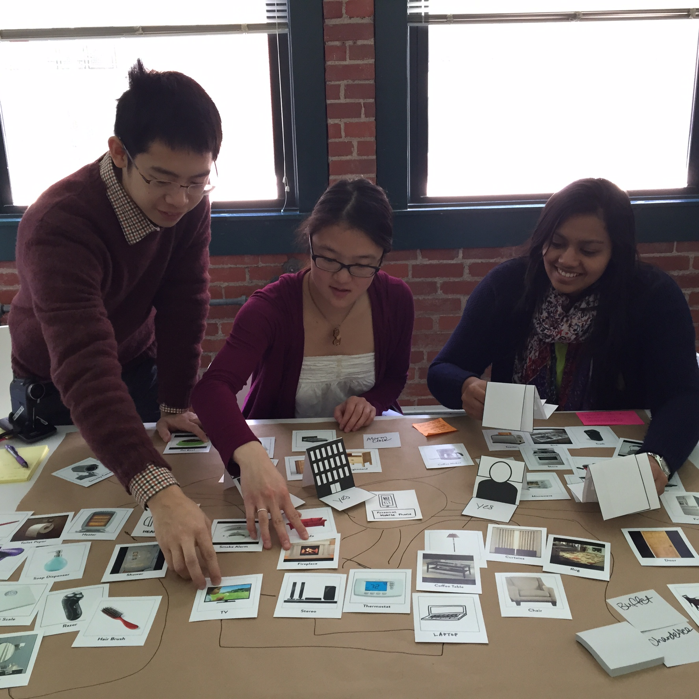
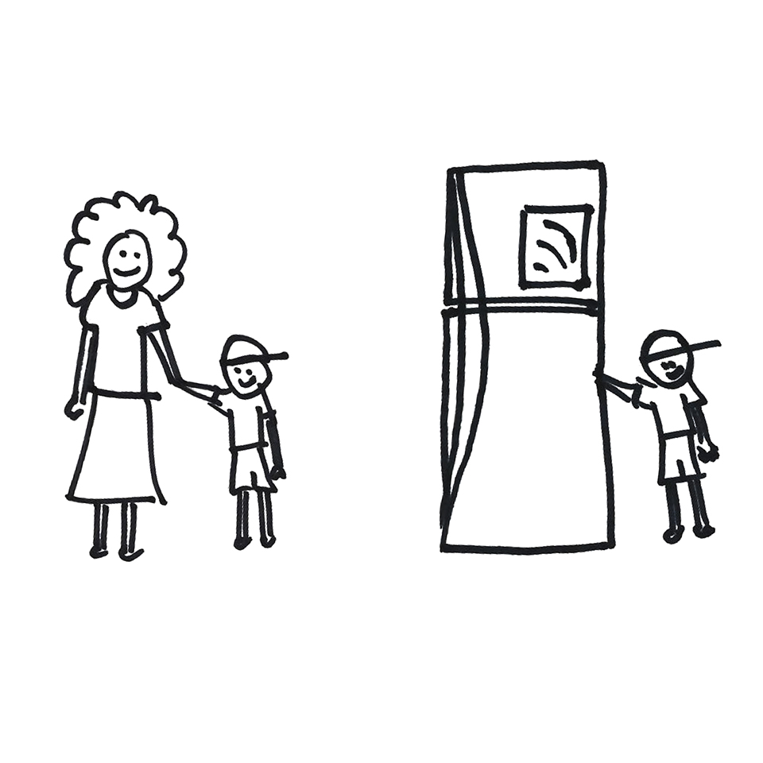
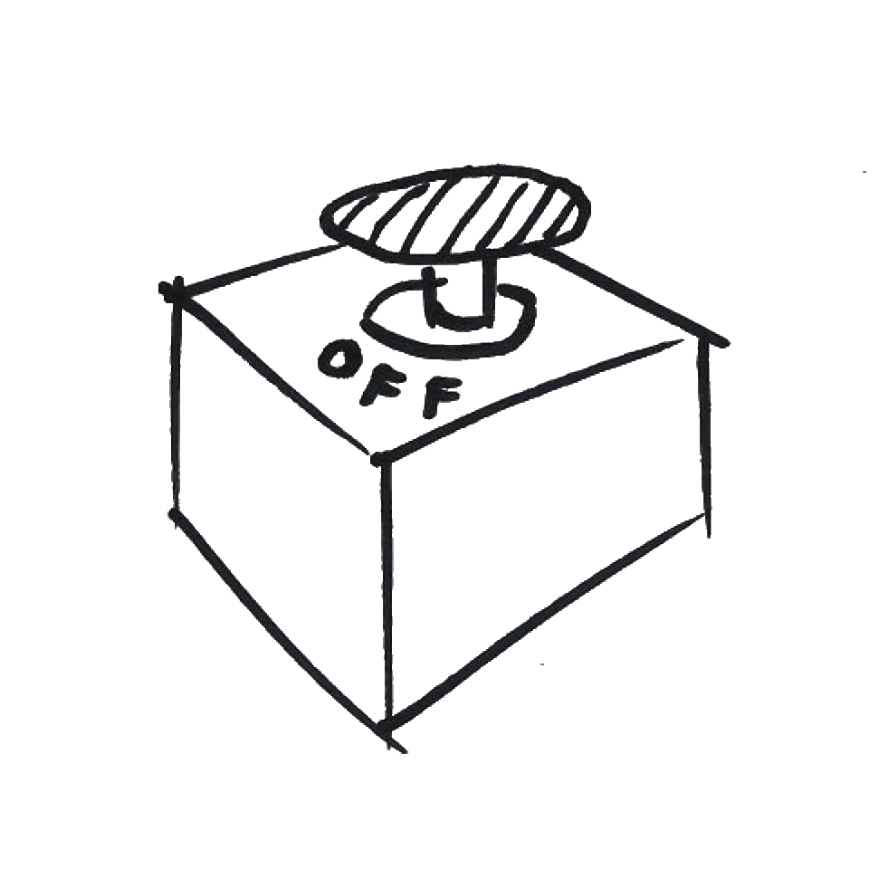
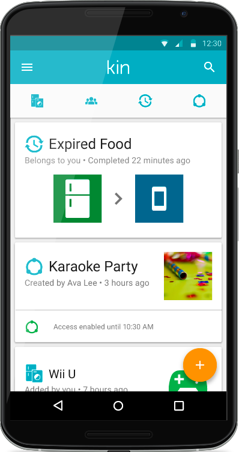
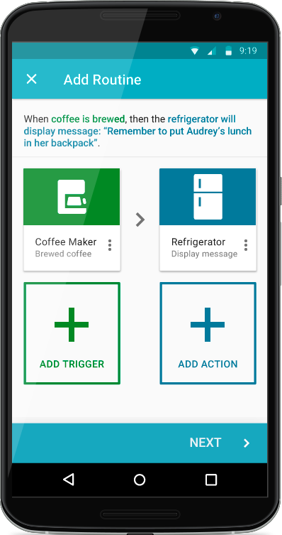
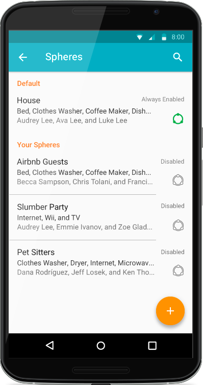
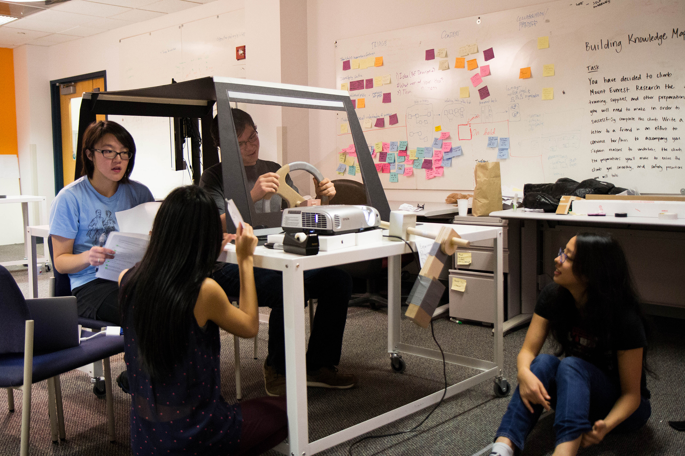
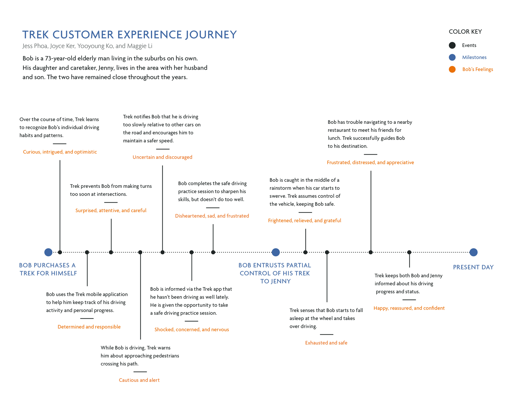

Student work
Selected UX, speculative, and service design projects · 2015
A humble projects library from my final year at Carnegie Mellon University spanning my senior and master's semesters. I continue to feature these projects in my portfolio due to the formative influence they had on my process and the designer I am today.
Project shortcuts
Kin – MHCI capstone project
Kin is a smart home system designed to give users total control over their personal data settings and privacy. Through the Kin Android app, homeowners can manage their data permissions and set up automations for their smart devices through a single, centralized digital hub.
This Capstone project was sponsored by Bosch and completed as part of my MHCI degree.
Challenge
The rise of sensor-based technology and Internet of Things (IoT) has resulted in increased public scrutiny of personal data security and privacy. Companies now have a greater moral obligation to educate consumers about the implications of using such technologies.
Bosch tasked my team to explore how their proposed data management model might interface with their growing smart home infrastructure — all while letting users retain full control over their personal information.
Process
Back in 2015, smart home technologies weren’t as mainstream as today. Our research strategy aimed to:
- explore people’s understanding of the emerging home automation landscape.
- assess comprehension of how personal data is used and stored.

Our approach consisted of a variety of research methods including interviews, card sorting x business origami, and user enactment.
Throughout all activities, we encouraged participants to be open-minded, aspirational about how they might want futuristic smart home system to work for them, despite any present day limitations in technology.
Key takeaways
Desire to see and manage data through physical means
Participants often expressed the need to be able to “hold” and manipulate data with their hands. They wanted something tangible that they could interact with, such as smartphone or tablet UI. It was these interactions with physical devices that reinforced their perceived sense of control.
Fear of system replacing humans
A common concern was that as sensors become more sophisticated, they have the harmful side effect of influencing how humans interact with one another. Participants didn't want their smart home to undermine their interpersonal relationships nor diminish the quality, human-to-human connections they experienced on a regular basis.

Access to an "off" button
The idea of living with a context-aware smart home system alarmed some participants. One individual exclaimed, "If I am living in a smart home, I would like a dark space where I know there is no sensing." They wanted the ability to turn off all data collection functionality in an instant.

Android app prototype
With Kin, users can:
- manage devices and data.
- configure routines.
- monitor their smart home remotely.
- share access and permissions with others.
Kin facilitates communication between a smart home and its devices, allowing users to set up automations called "Routines". A routine consists of at least one trigger and a corresponding response action. For example, a user might create a routine to send a push notification to their phone when the smart fridge senses that its water filter needs to be replaced.
Moreover, Kin lets users to monitor home activity and manage access from afar. Homeowners can create guest profiles with expiring user permissions.



By putting control back in users’ hands, Kin is the first step in designing a more welcoming, human-centric smart home system. Visit the project website for more information.
Team: Nirman Bisla, Jeel Jasani, Eric Yi, and Lisa Kim
Shepherd
Shepherd is a 3-part bicycle safety system concept from my Prototyping Tools for UX Design class. Through participatory research, my team and I identified an opportunity to mediate on-road relationships between cyclists, pedestrians, and drivers. I served as project manager, researcher, and co-designer.
The Shepherd system consists of:
- an in-helmet headset with haptic feedback
- a bike-mounted projector
- a companion mobile app
Trek
Trek explored how semi-autonomous cars might help mitigate anxiety shared between elderly drivers and their caretakers for my Service Design class. In life, getting your driver's license is considered a personal milestone symbolizing one's independence. When someone is deemed no longer fit to drive, their caretaker is burdened with the act of taking away the car keys — effectively revoking their license, their independence.
Over the course of the semester, I researched ways to utilize a vehicle's sensor technology to develop a friendlier, more accessible driving experience. I worked with my team to generate several user enactment scenarios intended to identify participants' wants and needs to inform the Trek ecosystem.
Process
To start, we explored several other problem spaces involving vehicles before making the aging population our focus. As smart cars increase in popularity coupled with a growing senior population, we saw an opportunity to investigate the relationship between the two.
To gain a better understanding of this domain, we spoke with caretakers who had experience trying to dissuade their parents from driving. A common theme that emerged was the importance of preserving an elderly person’s mental health after revoking their driving privileges. Participants emphasized how important the physical car keys meant to the seniors in their care — these were literally the “keys” to their independence.

Storyboard scenarios
Our conversations with caretakers inspired storyboards centered around four themes that were evaluated via a speed dating research exercise. We ran these storyboards by mix of caretakers and individuals who had close relationships with elderly people to get feedback on our proposed directions.
Generally, the idea of owning a smart car that monitored driving habits, provided continuous constructive feedback, and assumed control in unsafe conditions was well-received.
Participants also suggested extending this functionality beyond the senior population. They wanted a semi-autonomous car that could evaluate a driver’s performance sooner — before their abilities deteriorated. Starting early has the added benefit of tracking patterns and trends over a longer period of time and this data could be used to create a personalized transition plan later in life.
User enactment and outcomes
We used our collected feedback to devise three futuristic smart car scenarios:
- Unsafe driving episodes
- Trek mobile app x having to take away car keys
- Trek taking control of the vehicle in unsafe driving conditions

Our user enactment setup consisted of a mock smart car outfitted with a fabricated steering wheel, front seats, and windshield. Participants assumed the role of an elderly driver while my teammates simulated the car’s functions (e.g. HUD) and acted as the senior’s caretaker. I moderated each session and walked participants through a couple of scenarios.

Throughout each user enactments, we discovered that there needed to be a better way to communicate to the driver when the car took control. We attempted to provide participants with visual notifications in the HUD and haptic feedback through the steering wheel, but the feedback went unnoticed.
Furthermore, participants echoed sentiments from our previous research that if Trek were to be successful, drivers should have the right to opt in to the service rather than have it be forced on them later in life.
Team: Joyce Ker, Maggie Li, and Yooyoung Ko